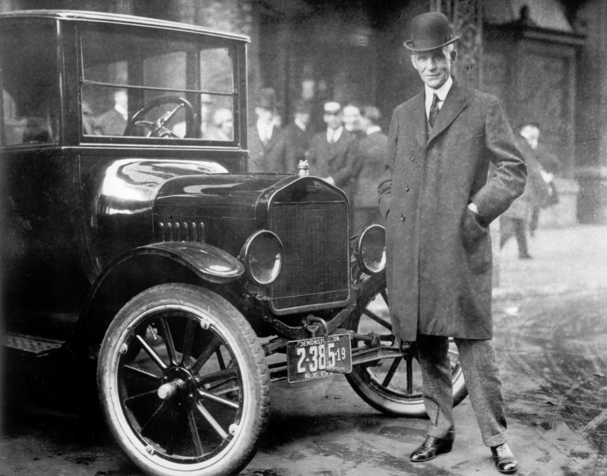

If you're not failing, you're not trying.
Albert Einstein
While Albert Einstein may or may not have failed math, he did make himself a bad reputation as student. Like some of us, he graduated from college and then struggled to find employment. He worked odd-jobs to support himself before finally becoming a patent clerk. He became the Einstein we know during that ho-hum job by analyzing math in patents he reviewed.
Einstein wasn't a great student, didn't miraculously find THE ONE TRUE JOB, and took a pretty normal-sounding path before he discovered his passion and unleashed it. How do you relate to Einstein's journey?
Check out this great article for more: Albert Einstein. His Struggles. His Failures.